Contents
clear; close all; clc;
Let B be the dominant allele that codes for brown eyes and b be the recessive allele that codes for blue eyes. We are given that the male chimpanzee has blue eyes. Hence the genotype of the male chimpanzee is bb. The female chimpanzee has brown eyes and hence she can be either BB or Bb genotypically. We are given that both of these are equally likely. For the sake of consistency, let's keep prefixes of m for male, f for female and c for child at the end of genotypes.
Hence we have:
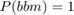; 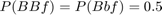;
We are also given that the a priori probabilities of the child having any of the four possible combinations of genotypes is the same. Hence we have:
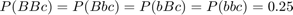
Since Bbc and bBc are the exact same genotypes, we have: ; 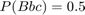;
a)
We are given that the child has brown eyes and we are to compute the likelihood that the female chimp has a blue-eyed gene i.e. that the genotype of the female chimp is Bb. Since the male chimp is genotypically bb, the phenotype of the child is determined by which allele it receives from the mother. If it receives allele B, then the genotype of the child becomes Bb and the phenotype is brown eyes. On the other hand, if it receives allele b, then the genotype of the child becomes bb and the phenotype is blue eyes. Hence the desired probability is:

Using Bayes' rule, we have:
The probability of the child getting B allele if the mother is genotypically Bb is 1/2 and the child will have allele B if the genotype of the child is either BB or Bb. Hence P(Bc) = 1/4 + 1/2 = 3/4
Substituting the values, we get:


b)
Let B1 be the event that the first child has brown eyes and B2 be the event that the second child has brown eyes. Therefore, the probability of the mother having b allele i.e. having Bb genotype is given by:

Using Bayes' rule, we have:

Similarly, the probability of the mother not carrying b allele i.e. having BB genotype is given by:
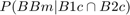
Using Bayes' rule, we have:
Taking the ratio of the two conditional probabilities:
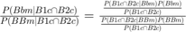
Therefore,
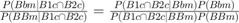
And since these are the only two possible genotypes for the mother, we have:
Therefore,
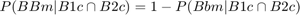
Substituting back into the formula above, we get:
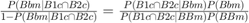
Therefore,
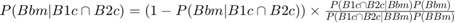
Therefore,
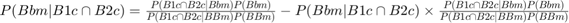
Therefore,
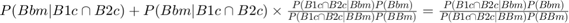
Therefore,
Therefore,
Therefore,
Therefore,
This is basically the Bayes' rule.
The probability of one child having brown eyes is independent of the other given the genotype of the mother. Hence we have:
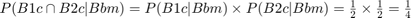
And we also have:
Substituting this in the formula, we get:
Therefore,
c)
Instead of 2 children, if there were N children with brown eyes, then using the same logic as in (b), we have:
Because: , we can reduce the equation to:

Also given the genotype of the mother, the genotypes of each child is independent of others, hence we have:
Therefore,
Therefore,
Therefore,